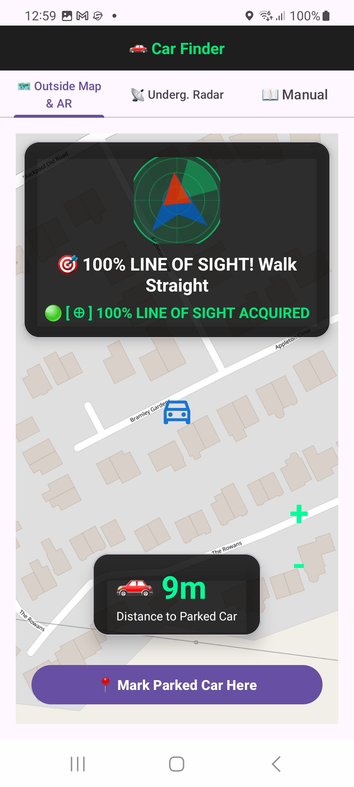
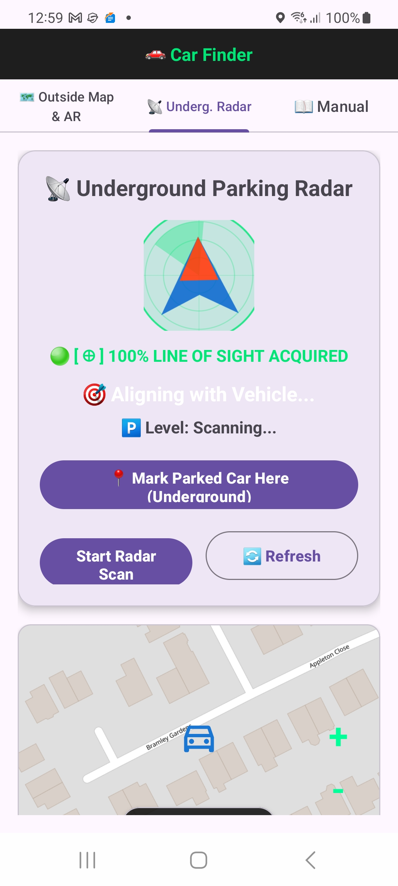
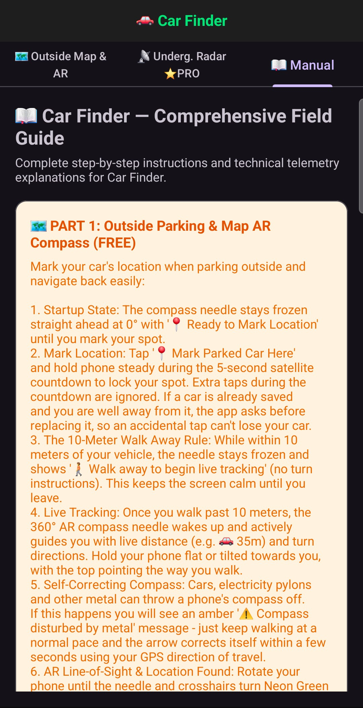
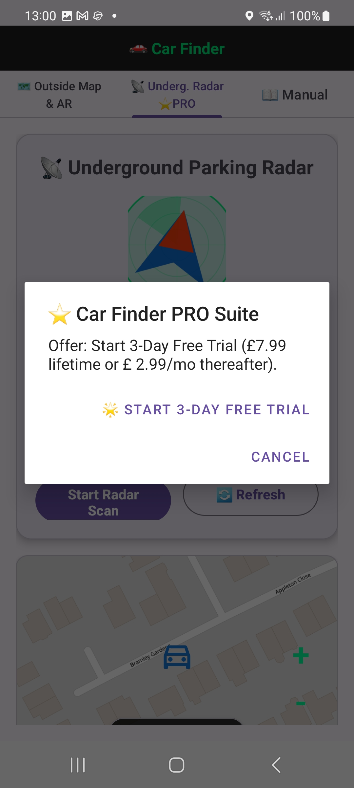

📖 Car Finder — Comprehensive Field Guide
Complete step-by-step instructions and technical telemetry explanations for Car Finder.
🗺️ PART 1: Outside Parking & Map AR Compass (FREE)
Mark your car's location when parking outside and navigate back easily:
- 1. Startup State: The compass needle stays frozen straight ahead at 0° with '📍 Ready to Mark Location' until you mark your spot.
- 2. Mark Location: Tap '📍 Mark Parked Car Here' and hold phone steady during the 5-second satellite countdown to lock your spot. Extra taps during the countdown are ignored. If a car is already saved and you are well away from it, the app asks before replacing it, so an accidental tap can't lose your car.
- 3. The 10-Meter Walk Away Rule: While within 10 meters of your vehicle, the needle stays frozen and shows '🚶 Walk away to begin live tracking' (no turn instructions). This keeps the screen calm until you leave.
- 4. Live Tracking: Once you walk past 10 meters, the 360° AR compass needle wakes up and actively guides you with live distance (e.g. 🚗 35m) and turn directions. Hold your phone flat or tilted towards you, with the top pointing the way you walk.
- 5. Self-Correcting Compass: Cars, electricity pylons and other metal can throw a phone's compass off. If this happens you will see an amber '⚠️ Compass disturbed by metal' message - just keep walking at a normal pace and the arrow corrects itself within a few seconds using your GPS direction of travel.
- 6. AR Line-of-Sight & Location Found: Rotate your phone until the needle and crosshairs turn Neon Green (🟢 100% LINE OF SIGHT ACQUIRED). When returning to within 3m, it displays '😊 Car's location found!'.
- 7. Finished / Reset: Tap '🔄 Reset Car's Location' to clear both Map and Underground Radar states back to clean standby. The app asks first, so an accidental tap can't lose your car.
⚙️ How Outside Map & AR Feature Works
- OpenStreetMap (OSM) Engine: Renders crisp, vector-based street maps worldwide without proprietary mapping API dependencies.
- GPS Coordinate Locking: Captures latitude and longitude via device hardware GPS and network triangulation.
- Bearing & Vector Calculation: Continuously computes the geodesic distance and directional bearing between your live GPS position and parked coordinates.
- Sensor Fusion & Azimuth Tracking: Uses device rotation vectors and low-pass filtering to calculate your phone's exact heading relative to True North, ensuring smooth, jitter-free compass arrow rotation and AR line-of-sight alignment.
- GPS Course Correction: While you walk, your GPS direction of travel is compared with the phone's compass. Any error caused by nearby metal is measured and removed from the arrow automatically.
- Magnetic Disturbance Detection: The app compares the magnetic field your phone measures with the expected field for your location, and warns you when nearby metal is affecting the compass.
📡 PART 2: 🅿️ UNDERGROUND Parking Radar (PRO)
Find your way back in multi-storey or underground car parks, where GPS often fails:
- 1. Mark Bay: When you park, open this tab and tap '📍 Mark Parked Car Here'. Type your level and bay number if you like (e.g. Level B2, bay 47).
- 2. What gets saved: the Wi-Fi networks your phone can see at the bay, the air pressure (if your phone has a barometer) and your note, plus a GPS position if one is available.
- 3. Upon Returning: Tap 'Start Radar Scan'. The app compares fresh readings with the saved ones and tells you whether you are higher or lower than your car (in metres and approximate levels) and how closely the Wi-Fi matches your bay.
- 4. The compass arrow and distance use GPS, which is unreliable underground: trust the level and Wi-Fi match more when indoors.
- 5. Finished: tap '🔄 Reset Car's Location' when you are back at your car.
⚙️ How Underground / Multi-Storey Feature Works
- Wi-Fi fingerprint: at your bay the app records the nearby Wi-Fi access points (BSSIDs) and their signal levels (dBm). On return it counts how many are still heard and how their levels changed. A close match means you are probably near your bay; no match usually means a different level or area.
- Barometer height: air pressure drops about 0.12 hPa per metre of height. Comparing the pressure now with the pressure at your bay gives the height difference, shown in metres and approximate levels (about 3 m each). Weather slowly changes air pressure, so readings taken many hours apart are approximate.
- Your note: the level and bay you typed are shown back to you.
- If the car park has no Wi-Fi or your phone has no barometer, the app says so rather than guessing.
⚡ WHY CAR FINDER PRO STANDS OUT
Traditional navigation apps struggle in multi-storey concrete car parks and dead zones where satellite GPS signals fail completely.
How Car Finder Pro Defeats Them:
- Underground Wi-Fi & Barometer Check: Where standard GPS fails underground, Car Finder compares the Wi-Fi networks and air pressure at your bay with fresh readings, telling you whether you are higher or lower than your car and how closely the Wi-Fi matches your bay.
- Self-Correcting AR Compass: Glowing green crosshairs, a magnetic-disturbance warning and automatic GPS course correction keep the arrow on track.
- Free Core Features: Outside Map & AR and the in-app field guide are free.
| Feature |
Standard Map Apps (Google / Apple) |
Car Finder Pro |
| Underground / Multi-Storey Tracking |
Fails (GPS signal lost) |
Wi-Fi Fingerprint + Barometer Level Check |
| AR Line-of-Sight Compass |
Basic blue dot / arrow |
Tactical Sweeping Radar & Crosshairs |
| Outside Map & AR Core |
General-purpose, not built for finding your car |
Clean, Fast & Dedicated |
👑 PART 3: PRO (via Google Play)
Outside Map & AR is free. Underground Parking Radar is part of Pro:
- Pro is sold through Google Play as a one-time lifetime purchase or a monthly subscription. Prices and any free trial are shown by Google Play at checkout.
- Purchases are restored automatically on reinstall (or tap Restore on the Pro screen).
- Manage or cancel subscriptions in Google Play › Payments & subscriptions.
ℹ️ PART 4: ABOUT & APP INFO (VERSION 2.7)
- App Name: Car Finder
- Version: 2.7 (Build 19)
- Target SDK: Android 36 (Edge-to-Edge Optimized)
- Core Modules: Outside Map & AR Compass, Underground Parking Radar (Wi-Fi fingerprint + barometer level check), Sensor-Fusion Azimuth Tracking, GPS Course-Corrected Compass, Magnetic Disturbance Warning, 5s Garmin-Style Weighted GPS Centroid Locking, 10m Calm Walk Away Rule, and In-App Field Guide.
- Publisher: AppStack Studio
- Support: appstack1966@gmail.com
⚠️ PART 5: IMPORTANT DISCLAIMER — SIGNAL DISCREPANCIES FAQ
Phones are not all the same, so Car Finder can behave a little differently from one phone to another:
1. GPS Accuracy (The Hardware Factor)
- Premium phones usually have better GPS chips and antennas, and some use two GPS frequencies. Budget phones can be several metres less accurate, especially between tall buildings or under trees.
- Indoors and underground, GPS is weak or missing. That is why the Underground Radar uses Wi-Fi and air pressure instead.
- The '±m' shown when you mark your car is the accuracy your phone reported for that spot.
2. Compass and Direction (The Sensor Factor)
- The arrow uses your phone's compass (magnetometer) and motion sensors. High-end phones calibrate their compass continuously; others can drift.
- Metal such as cars, electricity pylons and steel structures can pull the compass off. Car Finder warns you and corrects the arrow from your GPS direction of travel while you walk.
- If the arrow still seems wrong, move the phone in a figure-8 away from metal to recalibrate the compass.
Please use the features and various metrics provided in this app as a collective guide only.

1. Outside Map & AR
Mark parked car, giant distance & line-of-sight.

2. Underground Radar
Radar scope, Wi-Fi match & level check.

3. User Manual
In-app comprehensive field guide.

4. Pro Suite
Lifetime or monthly Pro via Google Play.